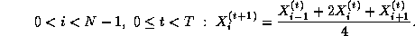
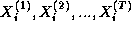

![[DBPP]](pictures//asm_color_tiny.gif)


![[Search]](pictures//search_motif.gif)
We conclude this chapter by presenting four examples of parallel algorithms. We do not concern ourselves here with the process by which these algorithms are derived or with their efficiency; these issues are discussed in Chapters 2 and 3, respectively. The goal is simply to introduce parallel algorithms and their description in terms of tasks and channels.
The first two algorithms described have an SPMD structure, the third creates tasks dynamically during program execution, and the fourth uses a fixed number of tasks but has different tasks perform different functions.

Figure 1.11: A parallel algorithm for the one-dimensional finite
difference problem. From top to bottom: the one-dimensional vector
X
, where N=8
; the task structure, showing the 8 tasks,
each encapsulating a single data value and connected to left and right
neighbors via channels; and the structure of a single
task, showing its two inports and
outports.
We first consider a one-dimensional finite difference problem, in which we have a vector of size N and must compute , where

That is, we must repeatedly update each element of X , with no element being updated in step t+1 until its neighbors have been updated in step t .
A parallel algorithm for this problem creates N
tasks, one for
each point in X
. The i
th task is given the value
and is responsible for computing, in T
steps, the
values . Hence, at step
t
, it must obtain the values  and
and  from tasks i-1
and i+1
. We specify this data transfer by
defining channels that link each task with ``left'' and ``right''
neighbors, as shown in Figure 1.11, and requiring that at step
t
, each task i
other than task 0 and task N-1
from tasks i-1
and i+1
. We specify this data transfer by
defining channels that link each task with ``left'' and ``right''
neighbors, as shown in Figure 1.11, and requiring that at step
t
, each task i
other than task 0 and task N-1
Figure 1.12: Task structures for computing pairwise interactions
for N=5
. (a) The unidirectional ring used in the simple,
nonsymmetric algorithm. (b) The unidirectional ring with additional
channels used to return accumulated values in the symmetric algorithm;
the path taken by the accumulator used for task 0 is shown as a solid
line.
Our second example uses a similar channel structure but requires a
more complex communication algorithm. Many problems require the
computation of all N(N-1)
pairwise interactions ,
, between N
data, . Interactions
may be symmetric, in which case and only
N(N-1)/2
interactions need be computed. For example, in
molecular dynamics we may require the total force vector acting
on each atom  , defined as follows:
, defined as follows:
Each atom is represented by its mass and Cartesian coordinates.
denotes the mutual attraction or repulsion between atoms
 and
and  ; in this example, , so
interactions are symmetric.
; in this example, , so
interactions are symmetric.
A simple parallel algorithm for the general pairwise interactions
problem might create N
tasks. Task i
is given the datum
 and is responsible for computing the interactions . One might think that as each task needs a
datum from every other task, N(N-1)
channels would be needed to
perform the necessary communications. However, a more economical
structure is possible that uses only N
channels. These channels
are used to connect the N
tasks in a unidirectional ring
(Figure 1.12(a)). Hence, each task has one inport and one
outport. Each task first initializes both a buffer (with the value of
its local datum) and an accumulator that will maintain the result of
the computation. It then repeatedly
and is responsible for computing the interactions . One might think that as each task needs a
datum from every other task, N(N-1)
channels would be needed to
perform the necessary communications. However, a more economical
structure is possible that uses only N
channels. These channels
are used to connect the N
tasks in a unidirectional ring
(Figure 1.12(a)). Hence, each task has one inport and one
outport. Each task first initializes both a buffer (with the value of
its local datum) and an accumulator that will maintain the result of
the computation. It then repeatedly
It turns out that if interactions are symmetric, we can halve both the
number of interactions computed and the number of communications by
refining the communication structure. Assume for simplicity that
N
is odd. An additional N
communication channels are
created, linking each task to the task offset  around the ring (Figure 1.12(b)). Each time an interaction
around the ring (Figure 1.12(b)). Each time an interaction
 is computed between a local datum
is computed between a local datum  and an incoming
datum , this value is accumulated not only in the accumulator for
and an incoming
datum , this value is accumulated not only in the accumulator for
 but also in another accumulator that is circulated with
but also in another accumulator that is circulated with  .
After steps, the accumulators associated with the
circulated values are returned to their home task using the new
channels and combined with the local accumulators. Hence, each
symmetric interaction is computed only once: either as
.
After steps, the accumulators associated with the
circulated values are returned to their home task using the new
channels and combined with the local accumulators. Hence, each
symmetric interaction is computed only once: either as  on
the node that holds or as on the node that holds
on
the node that holds or as on the node that holds
 .
.
The next example illustrates the dynamic creation of tasks and channels during program execution. Algorithm 1.1 explores a search tree looking for nodes that correspond to ``solutions.'' A parallel algorithm for this problem can be structured as follows. Initially, a single task is created for the root of the tree. A task evaluates its node and then, if that node is not a solution, creates a new task for each search call (subtree). A channel created for each new task is used to return to the new task's parent any solutions located in its subtree. Hence, new tasks and channels are created in a wavefront as the search progresses down the search tree (Figure 1.13).
Figure 1.13: Task structure for the search example. Each circle
represents a node in the search tree and hence a call to the
search procedure. A task is created for each node in the tree as it
is explored. At any one time, some tasks are actively engaged in
expanding the tree further (these are shaded in the figure); others
have reached solution nodes and are terminating, or are waiting for
their offspring to report back with solutions. The lines represent
the channels used to return solutions.
In so-called embarrassingly parallel problems, a computation consists of a number of tasks that can execute more or less independently, without communication. These problems are usually easy to adapt for parallel execution. An example is a parameter study, in which the same computation must be performed using a range of different input parameters. The parameter values are read from an input file, and the results of the different computations are written to an output file.
Figure 1.14: Task structure for parameter study problem. Workers (W)
request parameters from the input task (I) and send results to the
output task (O). Note the many-to-one connections: this program is
nondeterministic in that the input and output tasks receive data from
workers in whatever order the data are generated. Reply channels,
represented as dashed lines, are used to communicate parameters from
the input task to workers.
If the execution time per problem is constant and each processor has the same computational power, then it suffices to partition available problems into equal-sized sets and allocate one such set to each processor. In other situations, we may choose to use the task structure illustrated in Figure 1.14. The input and output tasks are responsible for reading and writing the input and output files, respectively. Each worker task (typically one per processor) repeatedly requests parameter values from the input task, computes using these values, and sends results to the output task. Because execution times vary, the input and output tasks cannot expect to receive messages from the various workers in any particular order. Instead, a many-to-one communication structure is used that allows them to receive messages from the various workers in arrival order.
The input task responds to a worker request by sending a parameter to that worker. Hence, a worker that has sent a request to the input task simply waits for the parameter to arrive on its reply channel. In some cases, efficiency can be improved by prefetching , that is, requesting the next parameter before it is needed. The worker can then perform computation while its request is being processed by the input task.
Because this program uses many-to-one communication structures, the order in which computations are performed is not necessarily determined. However, this nondeterminism affects only the allocation of problems to workers and the ordering of results in the output file, not the actual results computed.
© Copyright 1995 by Ian Foster